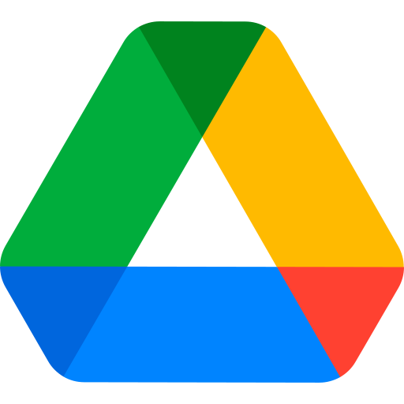
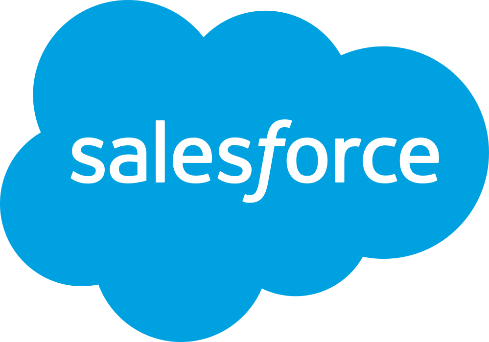

Any app that reads company data can use Gatekeeper.
Vendors, agents, partners, internal tools. Same rules, same logs.
Gatekeeper
Vendor
AI agent
Partner
Internal script
Slack

Google Drive

Salesforce
Side quest
GATEKEEPER · TRISSINO
SIDE QUEST 2